Abstract
I developed an Approximate Bayesian Computation workflow for evaluating related versus unrelated pedigree hypotheses from DNA-sharing summaries. Across eleven pedigrees, repeated cross-validation and label-permutation checks examined how well the constructed reference banks could be distinguished. The project emphasizes probabilistic evidence and the limits of transferring simulation performance to humanitarian identification cases.
Compare hypotheses through simulated evidence
The workflow simulates related individuals under a pedigree, builds an unrelated reference bank, summarizes shared identity-by-descent segments and uses rejection ABC to estimate support for competing hypotheses. The reference population and calibration choices are part of the inferential model.
| Stage | Purpose |
|---|---|
| Define | Specify related and unrelated hypotheses |
| Simulate | Construct reference banks and IBD summaries |
| Infer | Estimate support using rejection ABC |
| Check | Repeated cross-validation and permuted labels |
Source: original project materials linked below.
Assess performance without conflating benchmarks
Five repeated cross-validation runs per pedigree evaluated held-out pseudo-observations. Permuting model labels provided a sanity check. The very high internal classification results describe separation between these reference banks; they do not establish real-case identification accuracy.
Why the comparison needs care
The likelihood-ratio benchmark and ABC workflow use different information: a smaller marker set versus genome-wide IBD summaries. Their performance difference cannot isolate an advantage of ABC as an algorithm. The scientific contribution is an explicit, testable workflow and a clearer account of its assumptions.
The research in slides
The full presentation, right here. Use the arrows, or swipe sideways to browse.
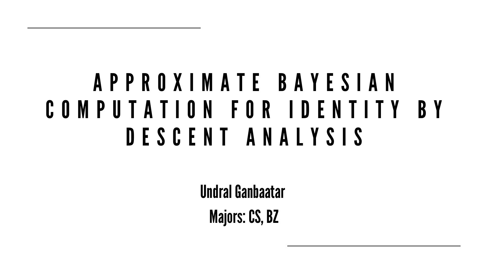
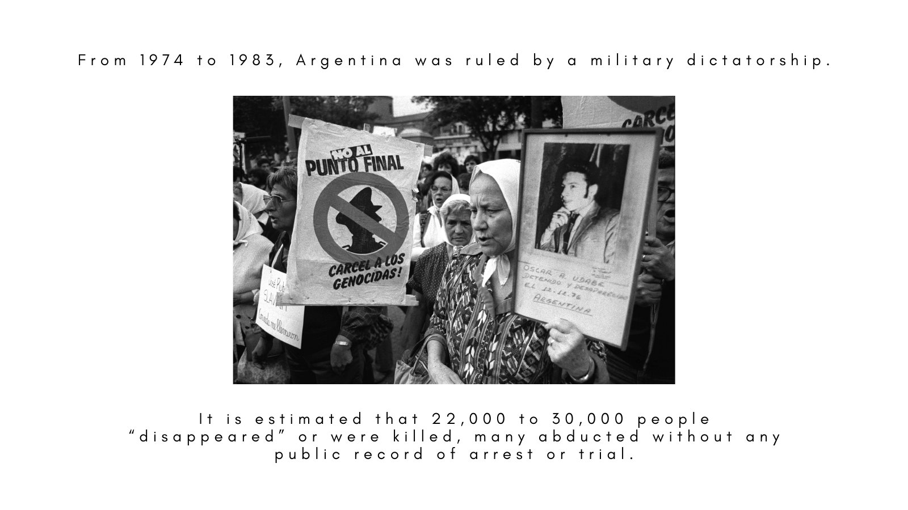
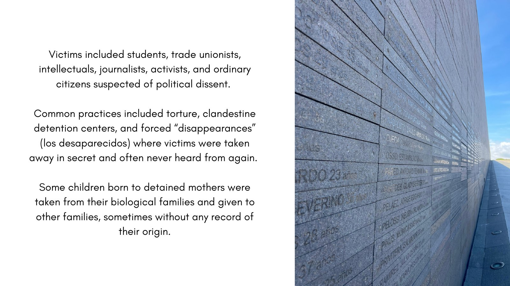
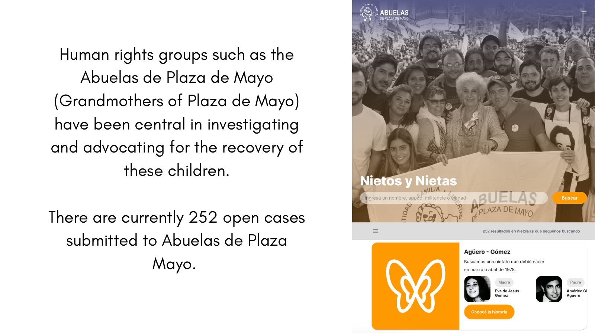
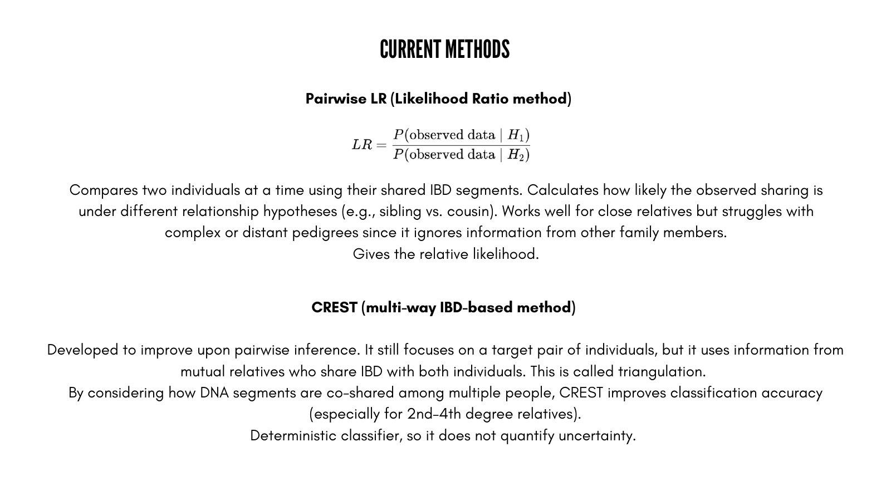
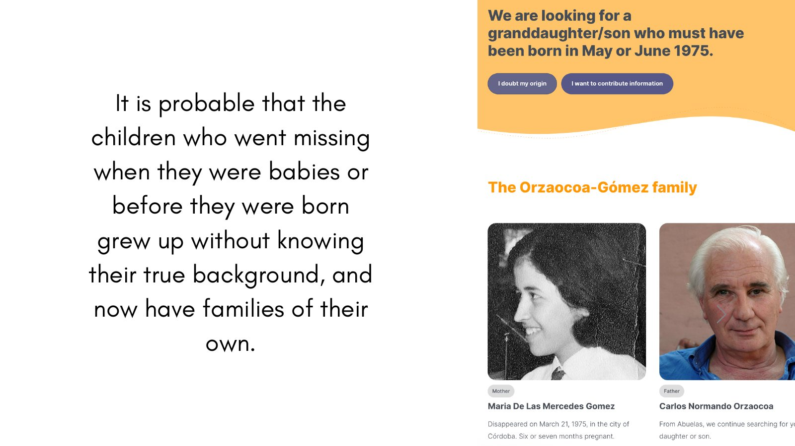
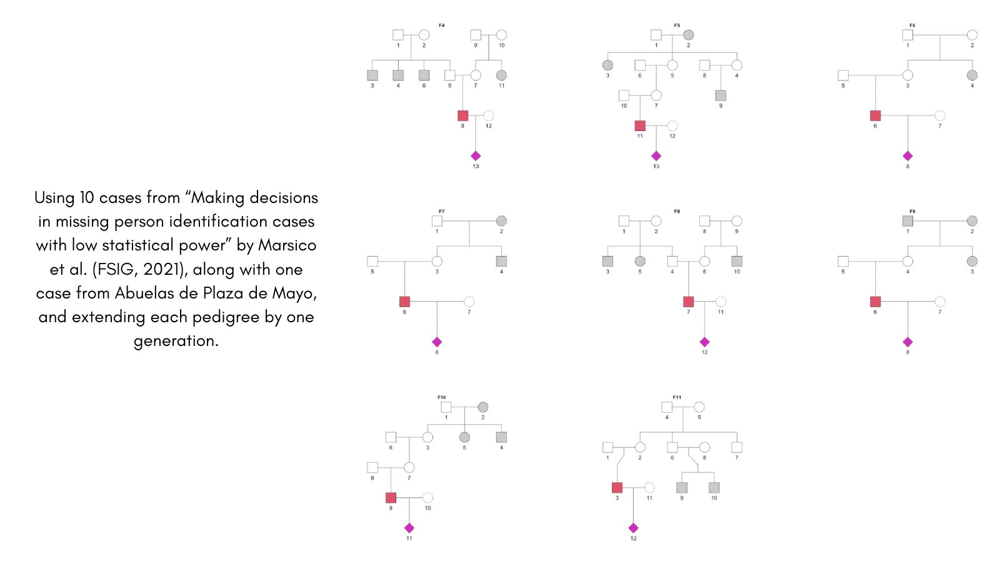
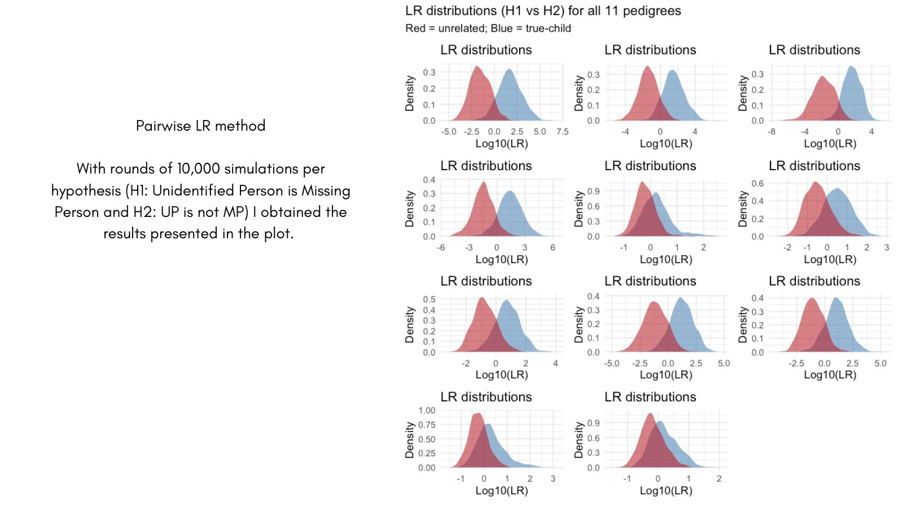
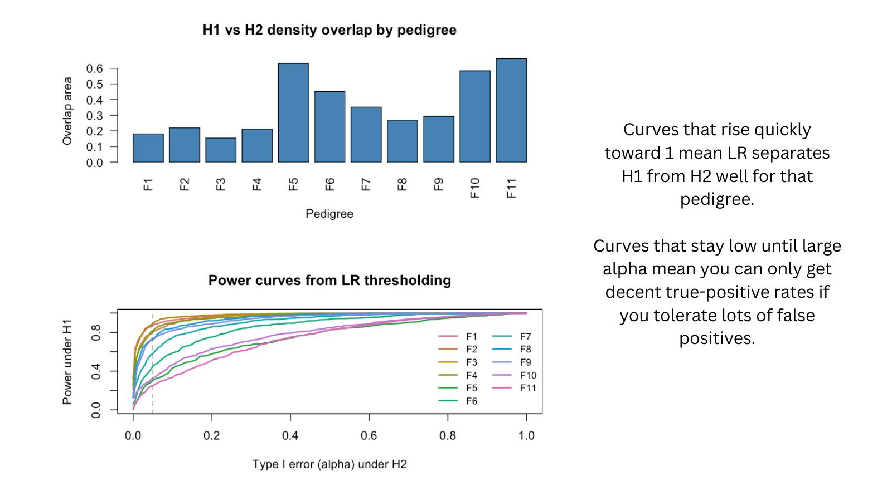
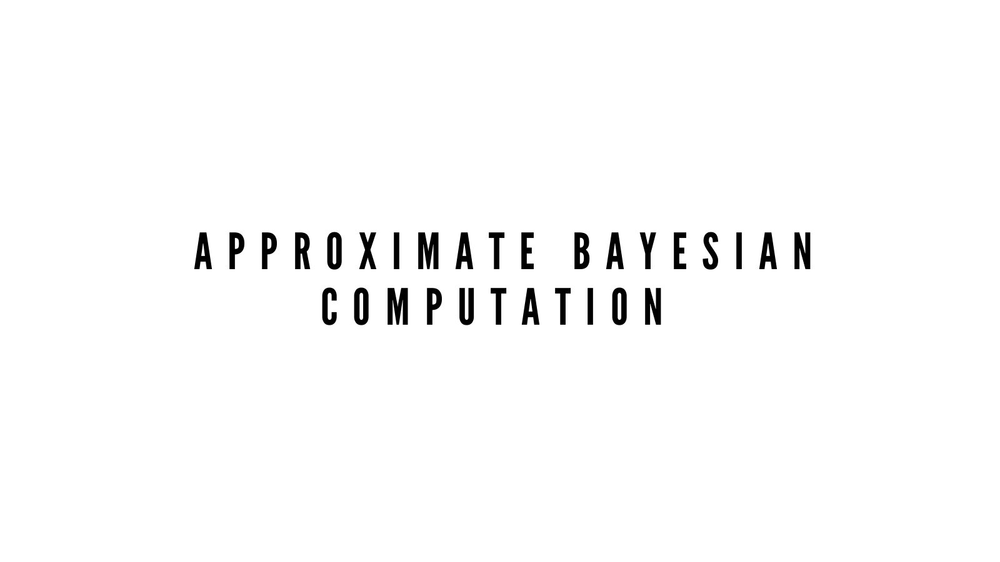
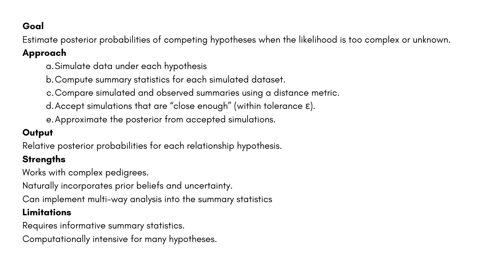
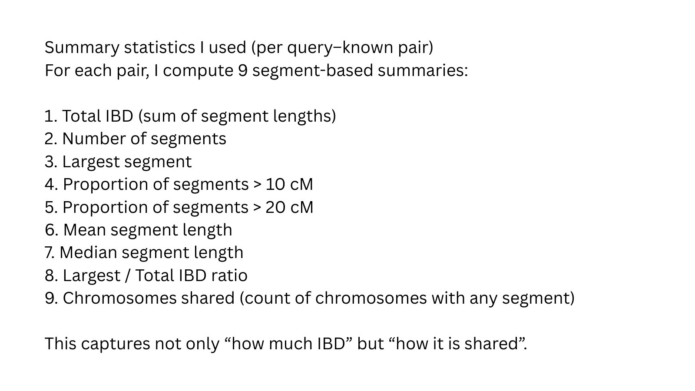
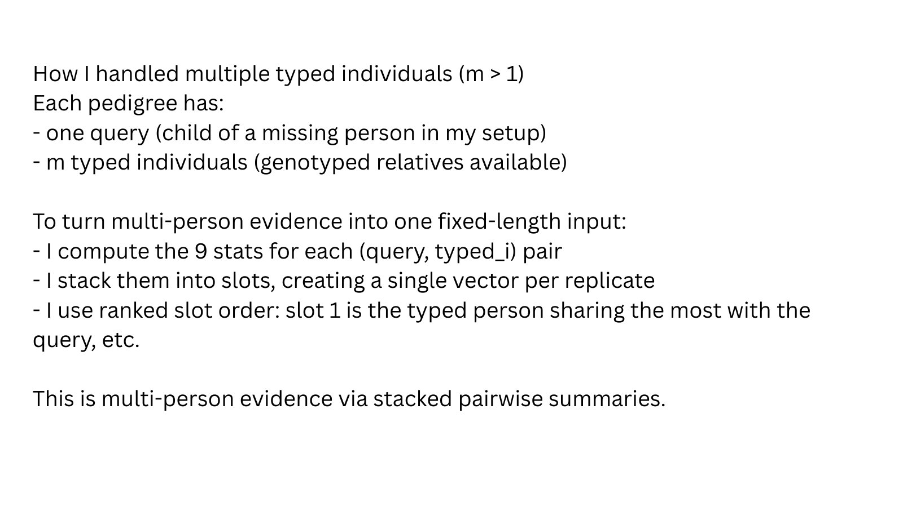
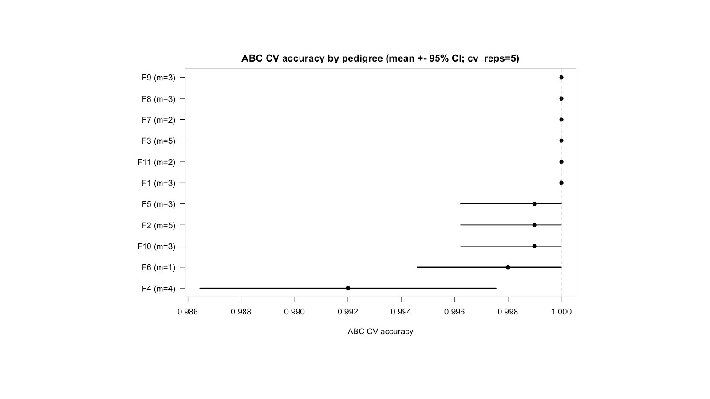
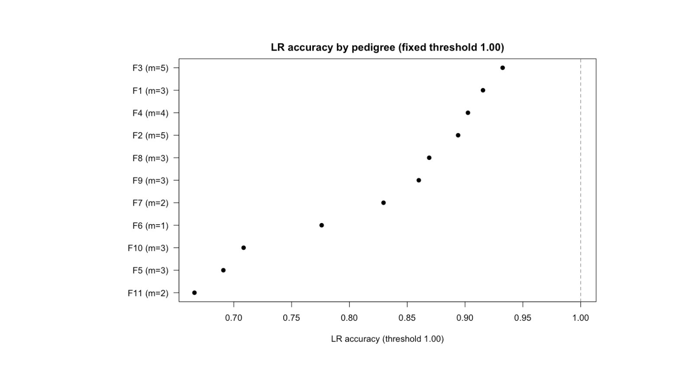
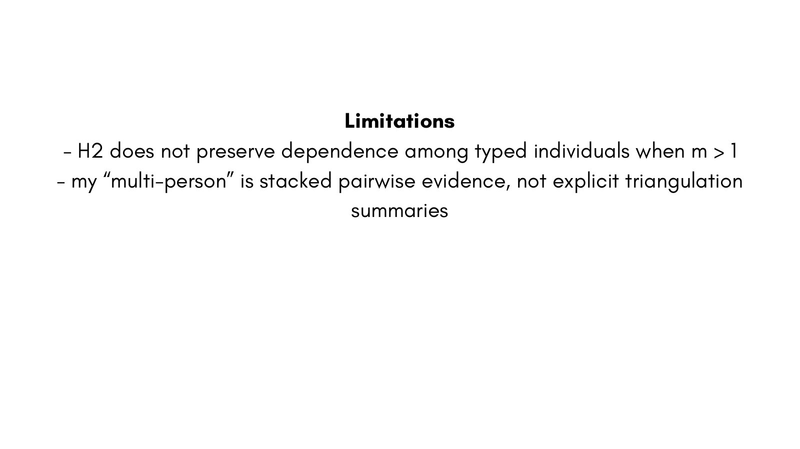
Explore the work
The original materials retain the calculations, assumptions and supporting discussion behind this overview.